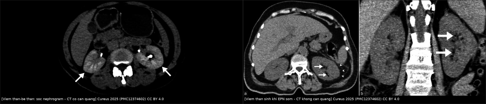
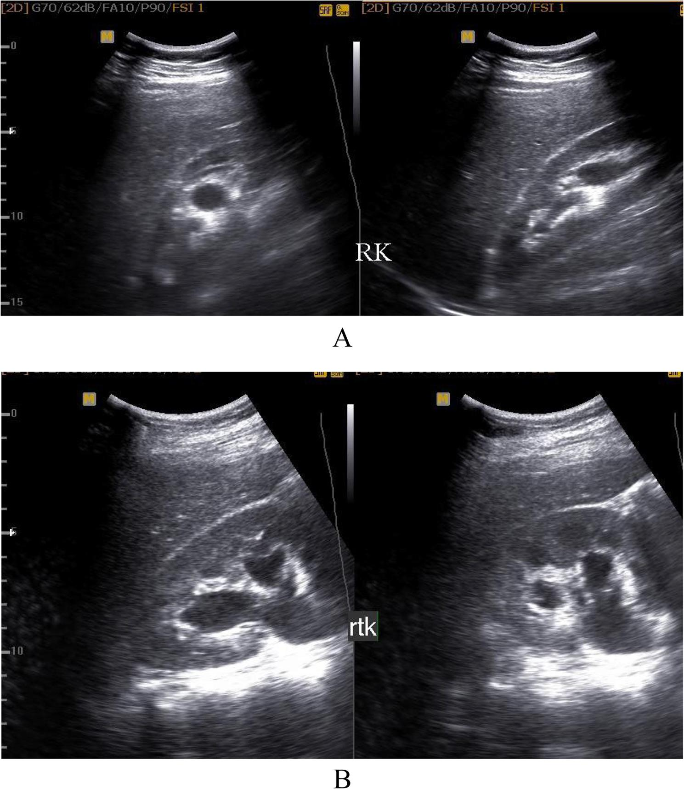
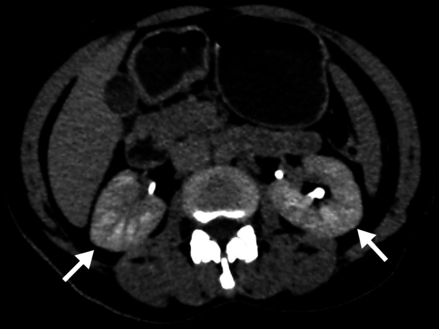
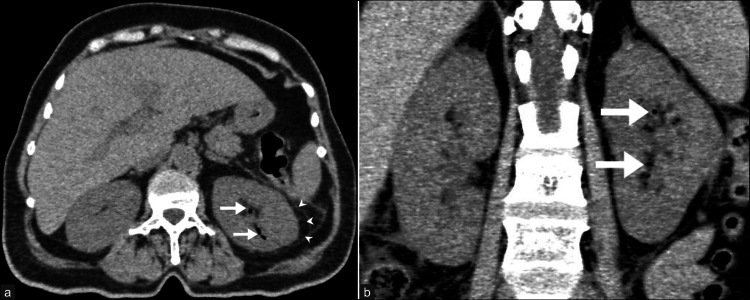
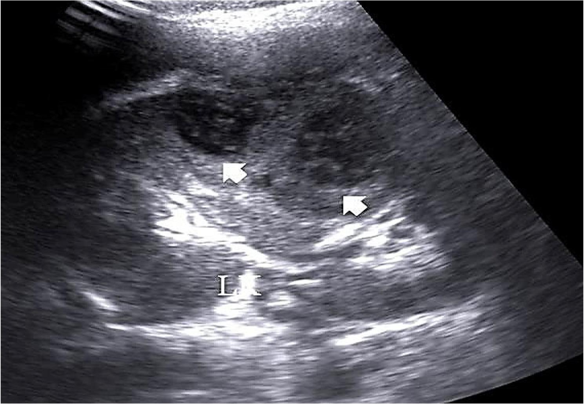

1921 — Nhiễm khuẩn niệu không triệu chứng & viêm thận–bể thận cấp ở thai phụ: cấy ≥ 10⁵, "giãn ≠ tắc", khi nào CT/MRI và khi nào dẫn lưu / Asymptomatic bacteriuria & acute pyelonephritis in pregnancy
Tags: pattern:u-nuoc pattern:viem vung:than vung:nieu-quan vung:thai-nhi vung:o-bung protocol:sieu-am-bung protocol:MRI-khong-can-tu protocol:CT-lieu-thap score:Huang-Tseng score:EAU-2025
Mức chắc chắn (certainty): tổng hợp y văn (literature synthesis) — ghép 6 nguồn mở: tổng quan CT các thể viêm thận (Cureus 2025, PMC12374602, CC BY 4.0, 8 hình), thuật toán siêu âm–Doppler cho đau hông ở thai (BMC Pregnancy Childbirth 2026, PMC13063533, CC BY 4.0, 6 hình), so sánh 13 guideline kháng sinh trong thai (Antibiotics 2022, PMC9740524, CC BY 4.0), tổng quan hệ thống hiệu quả sàng lọc–điều trị ASB (BMJ Open 2019, PMC6429717, CC BY-NC), thời gian tan dấu hiệu CT của viêm thận (Cureus 2026, PMC13634368, CC BY 4.0) và đoàn hệ viêm thận–bể thận ở thai (Am J Perinatol 2019, PMC6864490, CC BY-NC-ND — chỉ dùng số liệu). Số nào nguồn không nêu ghi "chưa rõ".
Câu chốt: Nhiễm khuẩn niệu không triệu chứng (asymptomatic bacteriuria, ASB) là bệnh của NUÔI CẤY, không phải của hình ảnh — siêu âm/thận bình thường không loại trừ, và cấy ≥ 10⁵ CFU/mL là ngưỡng duy nhất để điều trị. Điều trị ASB giảm viêm thận–bể thận RR 0,24 (0,13–0,42), ARR 17,6%, NNT 6 và giảm cân nặng sơ sinh thấp RR 0,63, NNT 23. Khi đã có viêm thận–bể thận, 96,5% thai phụ đau hông có ứ nước trên siêu âm — nghĩa là "giãn" không phải "tắc": chốt phân biệt nằm ở thành bể thận dày + Doppler RI ≥ 0,72 + tia nước tiểu, không phải ở mức độ giãn.
1. Tổng quan bệnh học – cơ chế hình ảnh
1.1 Vì sao thai phụ dễ bị nhiễm niệu và vì sao phải điều trị ASB (TẠI SAO)
- Dịch tễ: ASB gặp ở 2–10% thai phụ; nhiễm khuẩn niệu được chẩn đoán trong tới 50–60% số thai kỳ nếu tính cả viêm bàng quang và viêm thận–bể thận (PMC9740524). Các đoàn hệ ngoài Âu–Mỹ dao động rộng vì khác ngưỡng cấy: 3,42% (221/6.471 thai, Ả Rập Xê Út) với nguy cơ tăng ở quý I (OR 2,04) và có tiền sử nhiễm niệu (OR 2,98) (PMC9766479), trong khi gộp tại Ấn Độ là 13,5% (11,1–15,8) (PMC10795867) — đừng lấy một con số "chuẩn" cho mọi quần thể.
- Cơ chế nội tiết – cơ học: progesterone làm giãn cơ trơn niệu quản và giảm nhu động, tử cung to chèn ép niệu quản (phải nhiều hơn trái vì đại tràng sigma đẩy tử cung sang phải), thêm táo bón và ứ nước sinh lý — tất cả tạo ứ trệ nước tiểu, là điều kiện cho vi khuẩn đường ruột đi ngược dòng. E. coli chiếm 80–90% (PMC9740524).
- Vì sao ASB phải điều trị dù không triệu chứng: thai phụ không có "hàng rào" niệu quản như người không mang thai — ứ trệ + giảm nhu động biến khuẩn niệu thành nhiễm mô. Trong các thử nghiệm cũ, ASB không điều trị tiến triển thành viêm bàng quang có triệu chứng ở 30%, và trong số đó tới 50% thành viêm thận–bể thận (PMC9740524); gộp 12 thử nghiệm cho ARR 17,6% (PMC6429717). Đây là lý do 11/13 guideline (85%) khuyến cáo sàng lọc ASB bằng cấy nước tiểu ở lần khám thai đầu, lý tưởng 12–16 tuần (PMC9740524).
- Hệ quả sản khoa (nếu bỏ sót): sốt – nhiễm – đau làm tăng co bóp tử cung; viêm thận–bể thận ở thai là nguyên nhân nhập ICU — trong 110 thai phụ nhập viện vì viêm thận–bể thận, 86 người KHÔNG sốt lúc vào, và điểm cảnh báo sớm sản khoa dương tính dự báo nhập ICU với aOR 16,54 (1,29–212,5) (PMC6864490).
1.2 Vì sao hình ảnh trông như vậy (vật lý từng phương thức)
- Siêu âm — dịch, sỏi, và "giãn": nước tiểu không hồi âm vì gần như không có mặt phân cách trở kháng âm; sỏi tăng hồi âm mạnh + bóng lưng sạch vì cản âm gần như hoàn toàn. Nhưng "giãn" chỉ là hình học của dịch, không phải bằng chứng tắc: ứ nước sinh lý có từ quý II, đỉnh 24–28 tuần, và trong đoàn hệ 87 thai phụ đau hông, siêu âm thấy ứ nước ở 96,5%, bên phải 77% (PMC13063533) — nếu chỉ dựa vào "có ứ nước" thì gần như mọi thai phụ đau hông đều "tắc".
- Doppler — chỉ số kháng lực (resistive index, RI = (PSV − EDV)/PSV): tắc cấp làm tăng áp lực trong nang/BH, giảm dòng thì tâm trương → RI tăng. Trong cùng đoàn hệ, tắc cao độ có RI ≥ 0,72 (trung bình 0,78), còn chèn ép sinh lý giữ RI bình thường + còn tia nước tiểu (PMC13063533). Hình A/B dưới đây in đúng RI 0,77 và 0,74 kèm S/D 4,33 và 3,88 — tức sát ngưỡng, nên RI chỉ có giá trị khi đo đúng động mạch gian thùy và đối chiếu bên đối diện.
- CT — "sọc" (striated nephrogram) hình thành thế nào: mủ và phù kẽ chèn ép ống thận → trụ ống + phù gian bào → các bó ống tủy giảm ngấm xen kẽ các dải ngấm bình thường, tạo dải sọc tỏa từ tủy ra vỏ. Vì vậy dấu hiệu rõ nhất ở thì nephrographic (80–100 giây) — đúng thì mà độ chính xác chẩn đoán viêm thận cấp đạt 90–92% — và mờ đi ở thì muộn (PMC12374602). Kèm theo: thận to, dải giảm đậm độ hình nêm, dải mỡ quanh thận (perinephric stranding), dày cân thận.
- Vì sao CT "nhìn thấy" còn MRI "nhìn ra": khí trong mô có HU ≈ −1000 nên CT là chìa khóa của thể sinh khí; MRI T2 sáng với phù/nước, DWI hạn chế ở vùng mủ (edema tế bào + mủ đặc), còn sỏi là "trống tín hiệu" trên mọi chuỗi vì không có proton linh động — nên MRI loại trừ tắc nghẽn tốt nhưng không thấy sỏi trực tiếp.
- Hiệu năng: CT Se 86–98% / Sp 87–97% cho viêm thận cấp (PMC12374602); nephrographic là thì quyết định; CT urography đủ 3 thì liều 8–15 mSv, còn LDCT < 3,5 mSv / ULCT < 1,9 mSv — đây là lý do không dùng CTU đủ thì cho một ca viêm thận–bể thận đơn thuần ở thai.
1.3 Ngưỡng định lượng nằm lòng (bắt buộc nhớ)
| Chỉ số | Con số | Nguồn |
|---|---|---|
| ASB ở thai | 2–10%; tại chỗ: 3,42% (221/6.471) / gộp Ấn Độ 13,5% | PMC9740524, PMC9766479, PMC10795867 |
| Ngưỡng cấy ASB | ≥ 10⁵ CFU/mL một loài (lý tưởng 2 lần cấy; thực tế 1 lần đủ) | PMC9740524 |
| Sàng lọc | 11/13 guideline (85%), lần khám đầu, 12–16 tuần | PMC9740524 |
| Điều trị ASB | viêm thận–bể thận RR 0,24 (0,13–0,42); ARR 17,6%; NNT 6; cân nặng thấp RR 0,63; ARR 4,4%; NNT 23 | PMC6429717 |
| ASB không điều trị | viêm bàng quang 30%; trong số đó tới 50% thành viêm thận–bể thận | PMC9740524 |
| Căn nguyên | E. coli 80–90% | PMC9740524 |
| Thời gian kháng sinh | viêm bàng quang/ASB 3–7 ngày (fosfomycin 1 liều); viêm thận–bể thận 7–14 ngày | PMC9740524 |
| Cấy kiểm tra sau điều trị | 8/13 guideline (62%) cấy lại sau 7–14 ngày (nhiễm dưới); 4/13 (31%) sau viêm thận–bể thận | PMC9740524 |
| Siêu âm ở thai đau hông | ứ nước 96,5%; phải 77%; thành BH dày/phù 75%; sỏi 23%; tắc cao độ 11,5% | PMC13063533 |
| Doppler RI | tắc cao độ ≥ 0,72 (trung bình 0,78); chèn ép sinh lý RI bình thường + còn tia | PMC13063533 |
| CT viêm thận cấp | Se 86–98% / Sp 87–97%; thì nephrographic 80–100 s, chính xác 90–92% | PMC12374602 |
| Liều CT | CTU đủ 3 thì 8–15 mSv; LDCT < 3,5; ULCT < 1,9 mSv | PMC12374602, PMC10487296 |
| Hai bên | ~20% (gợi ý đường máu) | PMC12374602 |
| Khí trong thận | HU ≈ −1000; 90% thể sinh khí có đái tháo đường | PMC12374602 |
| Dấu hiệu CT tồn tại | 149 ± 100 ngày; còn bất thường 105 ngày sau khi hết triệu chứng | PMC13634368 |
| Thai không sốt vẫn nặng | 86/110 không sốt lúc vào; MEWC dương → ICU aOR 16,54 | PMC6864490 |
| Dẫn lưu ở thai | đặt stent 13,8% → 9,7% sau khi chuẩn hóa; thời gian quyết định 24,3 → 12,8 giờ | PMC13633813 |
| Vi khuẩn đa kháng | 34/171 (19,9%); tiền sử kháng sinh OR 20,37; thủ thuật niệu OR 13,23 | PMC12937342 |
2. Mẫu hình + chẩn đoán phân biệt theo vị trí (gamut)
Bốn mẫu hình gặp trên bàn phím khi đọc ca thai phụ đau hông/sốt:
- A. "Giãn bể thận – niệu quản" ở thai phụ: ứ nước sinh lý (hai bên, phải > trái, thuôn nhẵn, không điểm tắc, không thành dày, còn tia nước tiểu) · sỏi tắc (điểm tắc đột ngột + bóng sỏi, RI tăng) · viêm (pyelitis) (thành bể thận dày > 2 mm, phù quanh thận, không sỏi) · hẹp khúc nối/van niệu quản · chèn ép từ khối tiểu khung (u xơ, khối buồng trứng) — đừng quên thai là "khối" chèn ép lớn nhất.
- B. Thận to + giảm ngấm từng vùng: áp-xe thận (ổ dịch viền ngấm) · XGP · nhồi máu thận · lymphoma thận · viêm thận kẽ cấp do thuốc (AIN) · tắc nghẽn cấp.
- C. Khí trong thận: viêm thận sinh khí (EPN) · viêm bể thận sinh khí (khí chỉ trong ĐTH — tiên lượng tốt hơn) · áp-xe sinh khí (khí trong ổ có viền) · rò tiêu hóa–niệu · khí do thủ thuật.
- D. Ổ dịch trong nhu mô thận: nang đơn thuần · nang nhiễm trùng · áp-xe · máu tụ · ổ hoại tử trong XGP.
Gợi nhớ nhanh cho mẫu hình A ở thai: "SINH LÝ – SỎI – VIÊM – SẸO/HẸP" — thứ tự này cũng là thứ tự tần suất, và chỉ hai chữ giữa mới cần can thiệp cấp.
3. Bảng so sánh phân biệt (ma trận đối chiếu)
| Thực thể (entity) | Hình ảnh điển hình | Chốt vào (rule-in) | Chốt loại (rule-out) | Gợi ý xác nhận |
|---|---|---|---|---|
| Ứ nước sinh lý thai kỳ | Giãn bể thận–niệu quản hai bên, phải > trái, thuôn nhẵn, không điểm tắc, không thành dày | Còn tia nước tiểu + RI bình thường + giãn đối xứng theo tuổi thai | Điểm tắc đột ngột + RI ≥ 0,72 → không phải sinh lý | US + Doppler; so bên đối diện; khám lại sau 24–48 giờ |
| Viêm thận–bể thận cấp (APN) | Thận to, dải giảm đậm độ hình nêm, striated nephrogram thì nephrographic, dải mỡ quanh thận, dày cân thận | Sốt + đau hông + dải giảm ngấm hình nêm | Vùng giảm ngấm bờ rất sắc + "cortical rim sign" → nhồi máu | CT có cản quang (hoặc MRI nếu thai); cấy máu/niệu |
| Nhồi máu thận | Nêm giảm đậm độ bờ rất sắc, viền vỏ còn ngấm (cortical rim sign), không dải mỡ | Cortical rim sign + bệnh tim mạch/rung nhĩ | Có dải mỡ quanh thận + sốt → viêm | CTA; không đáp ứng kháng sinh |
| Lymphoma thận | Nhiều ổ giảm ngấm hoặc thâm nhiễm lan, thận to, không dải mỡ, hạch sau phúc mạc | Hạch + không sốt + không dải mỡ | Dải mỡ + sốt + đau → viêm | Sinh thiết; PET-CT |
| Viêm thận kẽ cấp (AIN) | Hai bên, lan tỏa, thận to, ngấm thuốc kiểu "nhiều nốt mờ", không nêm | Thuốc mới + creatinin tăng + không sốt cao | Tổn thương khu trú hình nêm → APN | Ngừng thuốc; cân nhắc sinh thiết |
| Áp-xe thận | Ổ dịch có viền ngấm, khí có thể có, dải mỡ quanh thận | Viền ngấm + trung tâm không ngấm + sốt kéo dài > 72 giờ | Chỉ phù lan tỏa, không ổ → APN chưa hoại tử | CT; US dẫn lưu; > 3 cm thường cần dẫn lưu (chưa rõ ngưỡng tuyệt đối) |
| Viêm thận sinh khí (EPN) | Khí trong nhu mô (HU ≈ −1000), phá hủy nhu mô, có thể lan quanh thận | Khí trong NHU MÔ trên CT không cản quang | Khí chỉ trong ĐTH → viêm bể thận sinh khí (nhẹ hơn) | CT + phân độ Huang–Tseng; cấy máu; kiểm soát đường huyết |
| XGP | Thận to, sỏi san hô 70–80%, hình "chân gấu", mô mỡ thay thế nhu mô | Sỏi trung tâm + chân gấu + viêm tái diễn | Không sỏi + ổ dịch cấp → áp-xe | CT; đa số phải cắt thận |

Trái: viêm thận phải — striated nephrogram (mũi tên) ở thì có cản quang. Phải: (a) khí sớm trong nhu mô thận trái; (b) mặt phẳng trán cho thấy các ổ khí — thể sinh khí. Nguồn: Cureus 2025 (PMC12374602), Figs. 2–3, CC BY 4.0; ghép bằngtools/make_composite.py (letterbox, không crop).
3.1 Vì sao "sọc" lại quan trọng hơn "thận to"
Thận to chỉ là hệ quả; sọc là bằng chứng tổn thương ống tủy do mủ, và nó đảo chiều chẩn đoán khi so với nhồi máu: nhồi máu cho nêm bờ sắc + viền vỏ còn ngấm, viêm cho dải mờ + dải mỡ quanh thận. Trên thai phụ, "sọc" còn giúp tránh chụp lại nhiều lần vì nó tồn tại rất lâu (xem mục 5).
3.2 Khí trong thận: đọc theo HU, không đọc theo "đốm đen"
Khí = −1000 HU; mỡ quanh thận = −40 đến −120 HU; đừng nhầm mỡ xoang quanh thận với khí. Vị trí khí quyết định tên gọi và tiên lượng: trong đài–bể thận = viêm bể thận sinh khí; trong nhu mô = EPN; lan ra quanh thận = độ 3A trở lên. Đây là chỗ CT không cản quang đã đủ chẩn đoán — không cần liều cản quang ở thai phụ nghi EPN.
4. Protocol chụp + hệ phân độ/điểm chuẩn hóa
4.1 Trình tự hình ảnh ở thai phụ nghi nhiễm niệu trên
- Siêu âm bụng–thận–niệu quản + Doppler RI + bàng quang căng (không tia): đo độ giãn theo phân độ 0–III, độ dày thành bể thận, RI động mạch gian thùy 3 lần mỗi bên, tìm tia nước tiểu, tìm sỏi (thêm đầu dò âm đạo cho sỏi 1/3 dưới — TVUS phát hiện 94% so với 29% khi chỉ quét qua bụng, PMC10487296).
- MRI không cản từ (SSFSE/HASTE + DWI) khi siêu âm không kết luận: phù T2 sáng, mủ DWI hạn chế, sỏi trống tín hiệu — loại trừ tắc nghẽn rất tốt.
- CT liều thấp (LDCT/ULCT) khi cần câu trả lời dứt khoát (nghi EPN, áp-xe, sỏi cản quang, thất bại điều trị): không cản quang nếu tìm sỏi/khí; có cản quang thì nephrographic 80–100 giây nếu tìm "sọc"/áp-xe. ACOG xem nguy cơ thai nhi là rất thấp dưới 50 mGy và không một khảo sát chẩn đoán đơn lẻ nào vượt 100 mGy — nhưng vẫn theo ALARA.
- Chỉ chụp lại khi có lý do lâm sàng (sốt tiếp diễn, đau tăng, creatinin xấu đi) — không chụp lại để "kiểm tra hình ảnh đã sạch chưa" (mục 5).
4.2 Phân độ viêm thận sinh khí — Huang & Tseng (dùng để chọn can thiệp)
| Độ | Khí ở đâu | Hướng xử trí |
|---|---|---|
| 1 | Chỉ trong đài–bể thận (viêm bể thận sinh khí) | Kháng sinh + dẫn lưu nếu tắc |
| 2 | Trong nhu mô, chưa ra quanh thận | Kháng sinh + dẫn lưu ổ; theo dõi sát |
| 3A | Lan ra khoang quanh thận | Dẫn lưu ± can thiệp ngoại |
| 3B | Lan ra khoang cạnh thận/tạng lân cận | Can thiệp ngoại sớm |
| 4 | Hai bên hoặc thận độc nhất | Cân nhắc cắt thận/ lọc máu |
4.3 Sơ đồ quyết định (Mermaid)
flowchart TD
A[Thai phụ đau hông / sốt] --> B[Cấy nước tiểu + CRP, WBC]
B --> C{Siêu âm + Doppler RI}
C -->|Ứ nước thuôn, RI bình thường, còn tia| D[Ứ nước sinh lý: theo dõi, không can thiệp]
C -->|Điểm tắc, RI >= 0,72| E[Nghi tắc nghẽn: MRI không cản từ hoặc LDCT]
C -->|Thành bể thận dày, phù quanh thận| F[Viêm thận - bể thận]
F --> G[Kháng sinh IV 7-14 ngày theo cấy]
G -->|Sốt > 48-72 giờ hoặc xấu đi| H[CT có cản quang / MRI: tìm áp-xe, khí, tắc]
H --> I{Áp-xe hoặc tắc hoặc khí?}
I -->|Có| J[Dẫn lưu: JJ stent / PCN / dẫn lưu ổ]
I -->|Không| K[Tiếp tục kháng sinh, cấy lại sau 7-14 ngày]
G -->|Đỡ sốt| K
4.4 Sàng lọc – điều trị ASB (điều dưỡng/sản khoa, nhưng CĐHA phải biết để không "chụp thay cấy")
- Cấy ở 12–16 tuần cho mọi thai phụ; ≥ 10⁵ CFU/mL → điều trị 3–7 ngày; cấy lại sau 7–14 ngày (62% guideline yêu cầu).
- Tránh: nitrofurantoin ở quý III (> 36 tuần) vì tan máu sơ sinh (và GFR < 45 mL/phút, thiếu G6PD); TMP-SMX ở quý I và quý III; amoxicillin–clavulanate có liên hệ viêm ruột hoại tử sơ sinh; fosfomycin tránh khi nguy cơ sinh non cao (PMC9740524).
- Dự phòng khi ASB dai dẳng sau điều trị, ≥ 2 đợt nhiễm niệu trong thai: cephalexin 250–500 mg, nitrofurantoin 50–100 mg, hoặc fosfomycin 3 g mỗi 7–10 ngày (PMC9740524).
5. Biến thể bình thường và cạm bẫy
- Cạm bẫy số 1 — "ứ nước = tắc": 96,5% thai phụ đau hông có ứ nước trên siêu âm (PMC13063533). Chốt phân biệt là hình thái (thuôn nhẵn vs điểm tắc) + thành bể thận + RI + tia nước tiểu, không phải độ giãn. Đừng đặt stent cho một thận "giãn đẹp" mà không có bằng chứng tắc.
- Cạm bẫy số 2 — RI "sát ngưỡng": RI 0,74–0,77 (như hình B) nằm ngay trên ngưỡng 0,72; tăng huyết áp, đái tháo đường, tuổi, nhịp tim và tư thế đo đều làm RI lệch. Luôn đo 3 lần, so bên đối diện, và nhớ RI bình thường không loại trừ tắc từng phần.
- Cạm bẫy số 3 — chụp lại để "xem đã sạch chưa": dấu hiệu CT của viêm thận tồn tại 149 ± 100 ngày, và còn bất thường 105 ngày sau khi bệnh nhân đã hết triệu chứng (93 bệnh nhân/288 lần chụp, PMC13634368). Chụp lại theo hình ảnh sẽ dẫn tới kháng sinh kéo dài hoặc can thiệp vô ích — chỉ chụp lại khi lâm sàng xấu đi.
- Cạm bẫy số 4 — "không sốt nên nhẹ": 86/110 thai phụ nhập viện vì viêm thận–bể thận không sốt lúc vào, và điểm cảnh báo sớm dương tính dự báo ICU với aOR 16,54 (PMC6864490). Hình ảnh nặng + lâm sàng "êm" là ca phải theo dõi sát nhất, không phải ca nhẹ nhất.
- Cạm bẫy số 5 — dùng siêu âm để chẩn đoán ASB: ASB không có bất thường hình ảnh; siêu âm bình thường không loại trừ và siêu âm bất thường (ứ nước sinh lý) không chứng minh nhiễm. Chẩn đoán bằng cấy; hình ảnh chỉ trả lời "có biến chứng/tắc không".
- Cạm bẫy số 6 — cấy một lần rồi thôi: ngưỡng 10⁵ chỉ có giá trị khi mẫu nước tiểu giữa dòng sạch; ≥ 2 loài = nhiễm bẩn, cấy lại; và vẫn phải cấy kiểm tra sau điều trị vì tái phát/dai dẳng là lý do chính để dự phòng.
- Cạm bẫy số 7 — quên sỏi "vô hình": sỏi không cản quang (urate) không thấy trên CT không cản quang và trống tín hiệu trên MRI; nếu triệu chứng tái diễn mà không thấy sỏi, đừng kết luận "không sỏi" — chuyển siêu âm đầu dò âm đạo/ CT có cản quang thì muộn.
- Cạm bẫy số 8 — dẫn lưu muộn: trong 451 thai phụ viêm thận–bể thận cấp, việc chuẩn hóa quyết định giảm stent từ 13,8% → 9,7% nhưng cũng rút thời gian quyết định từ 24,3 → 12,8 giờ (PMC13633813) — tức không phải "dẫn lưu nhiều hơn" mà là "dẫn lưu đúng và sớm hơn".
6. Tự lượng giá — Blind Quiz
Ca 1 — Thai 26 tuần, đau hông phải 2 ngày, không sốt, CRP 42 mg/L. Siêu âm thận phải:

- Hỏi: (1) mô tả độ giãn; (2) đây là ứ nước sinh lý hay tắc? (3) hai nghiệm pháp bổ sung để chốt?
Bấm để hiện đáp án (findings + chẩn đoán)
- Findings: (A) giãn nhẹ đài–bể thận, còn thấy các đài hình chén — độ II; (B) đài thận căng tròn, bể thận giãn rõ — độ III. Không thấy sỏi, không thấy điểm tắc đột ngột.
- Chẩn đoán: hình ảnh phù hợp ứ nước — nhưng một mình siêu âm B-mode không phân biệt sinh lý với tắc. Cần Doppler RI (tắc cao độ ≥ 0,72, trung bình 0,78) và tia nước tiểu (còn tia + RI bình thường → chèn ép sinh lý).
- Vì sao: thai kỳ làm giãn đường niệu do progesterone + chèn ép; 96,5% thai phụ đau hông có ứ nước nên "thấy giãn" là chuyện thường, "thấy tắc" mới là chuyện cần chứng minh.
- Nguồn ảnh: BMC Pregnancy Childbirth 2026 (PMC13063533), Fig. 1, CC BY 4.0.
Ca 2 — Thai 22 tuần, sốt 39 °C, đau hông trái, siêu âm không thấy sỏi; CT có cản quang thì nephrographic:

- Hỏi: dấu hiệu chính? Ba chẩn đoán phân biệt? Dấu hiệu nào loại nhồi máu thận?
Bấm để hiện đáp án (findings + chẩn đoán)
- Findings: dải sọc giảm–tăng đậm độ xen kẽ ở nhu mô thận hai bên (mũi tên), dải mỡ quanh thận, không có ổ dịch.
- Chẩn đoán: viêm thận–bể thận cấp với striated nephrogram (mủ + phù kẽ chèn ống thận → giảm ngấm từng bó ống tủy).
- Phân biệt: nhồi máu thận — lymphoma — AIN. Loại nhồi máu bằng bờ nêm rất sắc + cortical rim sign (viền vỏ còn ngấm) và không có dải mỡ; viêm thận cho dải mờ + dải mỡ + sốt.
- Ghi chú phản biện: đây là ảnh minh họa từ bài tổng quan, không phải thai phụ — hình thái giống hệt, nhưng ở thai nên ưu tiên MRI trước CT.
- Nguồn ảnh: Cureus 2025 (PMC12374602), Fig. 2, CC BY 4.0.
Ca 3 — Thai 30 tuần, đái tháo đường thai kỳ, sốt 3 ngày, đau hông trái; CT không cản quang:

- Hỏi: mô tả bất thường? Chẩn đoán và phân độ? Bước xử trí tiếp theo?
Bấm để hiện đáp án (findings + chẩn đoán)
- Findings: (a) các ổ khí nhỏ (mũi tên) trong nhu mô và đài–bể thận trái + dải mỡ quanh thận nhẹ; (b) mặt phẳng trán xác nhận khí trong nhu mô, chưa lan rõ ra quanh thận.
- Chẩn đoán: viêm thận sinh khí (EPN) sớm, Huang–Tseng độ 2 (khí trong nhu mô, chưa ra khoang quanh thận).
- Xử trí: kháng sinh phổ rộng + kiểm soát đường huyết + dẫn lưu; theo dõi sát vì 90% EPN có đái tháo đường và thể này có tử vong cao. Khí = −1000 HU, khác mỡ quanh thận (−40 đến −120 HU).
- Nguồn ảnh: Cureus 2025 (PMC12374602), Fig. 3, CC BY 4.0.
Ca 4 — Thai 18 tuần, sốt dai dẳng 5 ngày dù kháng sinh; siêu âm thận trái:

- Hỏi: hai ổ giảm hồi âm là gì? Vì sao phải chụp thêm? Ngưỡng can thiệp?
Bấm để hiện đáp án
- Findings: hai ổ dịch thành dày, dịch đục (turbid), mũi tên — gợi ý áp-xe thận, không phải nang đơn thuần (nang có thành mỏng, dịch trong).
- Vì sao chụp thêm: siêu âm không đánh giá được vỏ–viền ngấm và khí; CT có cản quang (hoặc MRI) xác định ổ dịch có viền ngấm, số ổ, và có khí hay không — quyết định dẫn lưu qua da.
- Ngưỡng: áp-xe > 3 cm thường phải dẫn lưu (số cụ thể thay đổi theo nguồn — chưa rõ ngưỡng tuyệt đối); áp-xe nhỏ + đáp ứng kháng sinh có thể theo dõi.
- Nguồn ảnh: BMC Pregnancy Childbirth 2026 (PMC13063533), Fig. 5, CC BY 4.0.
Bài liên quan chéo
- 500 – Tổng quan hệ Vú & Sản phụ khoa
- 1818 – Sỏi niệu quản ở thai phụ: siêu âm – MRI, dẫn lưu tạm và khi nào lấy sỏi
- 152 – Sỏi niệu
- 191 – Vá lại rò niệu–sinh dục thất bại
- 1667 – Tắc ruột non do dính ở thai phụ (đau bụng cấp ở thai: cùng nguyên tắc "MRI trước CT")
Không dùng để chẩn đoán độc lập khi chưa có người hướng dẫn.